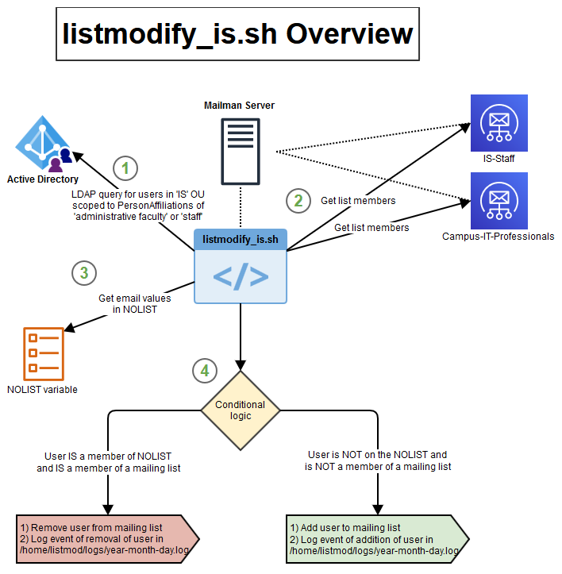

Our team supports a Mailman list server, and while it just chugs along happily all on its own, I uncovered a need for automating a task for the administrative staff of our department to manage membership of a couple mailing lists that they tried their best to keep current when new employees are on-onboarded. The script does a good job of finding users in our department Organizational Unit in AD (a service I own) that need to be added to mailing lists in question. In future iterations of this script, I'd like to add logic that would help weed out users that should be removed from the mailing lists. The managed user identities within our department OUs are managed by an authoritative identity management solution "above" Active Directory, and as such, manage the creation/updating/disabling/removal of user objects, but those tasks are managed by HR policies and actions regarding employee status. What this means is, we have many managed user objects that resides in Active Directory that may no longer be affiliated/active users that live on the system. To combat re-adding users who are known to have left the organization, I included the "NOLIST" variable to prevent those known users from being re-added to mailing lists.

#!/bin/bash
# Sourcing in the environment path to include the unboundid-ldapsdk path
source ~/.bash_profile ### Utilizing unboundid binaries for ease of ldaps syntax in the ldap query command block below
# Logging function
log()
{
DATE=$(date +%y_%m_%d)
echo `date +%y/%m/%d_%H:%M:%S`:: $* >> ~/logs/listmodify_is_$DATE.log 2>&1
}
# Block list for users that should not be included in IS-related mailing lists that still reside in the IS OU
NOLIST="person0@domain.com person1@domain.com"
# LDAP query of IS OU Managed users
QUERY=$(ldapsearch \
--hostname 'ad.domain.com' \
--port 636 \
--useSSL --trustAll \ ### These options are possible using the unboundid binaries, which makes ldaps connections much easier
--bindDN "CN=is-svc-listsmodify,OU=Service Accounts,OU=Unmanaged,OU=Users,OU=IS,OU=Units,DC=ad,DC=domain,DC=com" \
--bindPassword '...' \
--baseDN 'OU=Managed,OU=Users,OU=IS,OU=Units,DC=ad,DC=domain,DC=com' \
--scope sub "(|(AD-UoPersonAffiliation=staff)(AD-UoPersonAffiliation=administrative faculty))" UserPrincipalName | sed '/^dn:/d';'/^#/d';'s/userPrincipalName: //';sed '/^$/d')
# Conditional logic, looking for a user membership in IS groups, if they are not found to be members, they will be added to each respective group
for USER in $QUERY
do
#echo $USER
# IS-Staff list query
if [ $(/usr/local/mailman/bin/list_members IS-Staff | grep $USER) ]
then
if [ "$(echo $NOLIST | grep $USER)" ]
then
log "$USER found in IS-Staff, $USER found in NOLIST, removing from IS-Staff."
/usr/local/mailman/bin/remove_members is-staff $USER
fi
else
if [ "$(echo $NOLIST | grep $USER)" ]
then
A=$(echo "$USER not found in IS-Staff, $USER found in NOLIST, no action required.")
else
log "$USER not found in IS-Staff, not in NOLIST, adding $USER to IS-Staff"
echo $USER | /usr/local/mailman/bin/add_members -r - is-staff
fi
fi
# Domain-IT-Professionals list query
if [ $(/usr/local/mailman/bin/list_members Domain-IT-Professionals | grep $USER) ]
then
if [ "$(echo $NOLIST | grep $USER)" ]
then
log "$USER found in Domain-IT-Professionals, $USER found in NOLIST, removing from Domain-IT-Professionals."
/usr/local/mailman/bin/remove_members is-staff $USER
fi
else
if [ "$(echo $NOLIST | grep $USER)" ]
then
B=$(echo "$USER not found in Domain-IT-Professionals, $USER found in NOLIST, no action required.")
else
log "$USER not found in Domain-IT-Professionals, not in NOLIST, adding $USER to Domain-IT-Professionals."
echo $USER | /usr/local/mailman/bin/add_members -r - Domain-it-professionals
fi
fi
done
# Reference for mailman cmds
# /usr/local/mailman/bin/list_members Domain-it-professionals)
# /usr/local/mailman/bin/list_members IS-Staff)
# echo $USER | /usr/local/mailman/bin/add_members -r - Domain-it-professionals
# echo $USER | /usr/local/mailman/bin/add_members -r - is-staff
# /usr/local/mailman/bin/remove_members Domain-it-professionals $USER
# /usr/local/mailman/bin/remove_members it-staff $USER